Carpet Grand Prix · Master-Kinderzimmer
Eine Rennwelt.
Ein ganzes Kinderzimmer.
Bahrain fährt auf dem zentralen Teppich eines zusammenhängenden Kinderzimmers. Bett, Schreibtisch, Fenster, Schrank, Regal und Spielzeugecke stehen rund um die unveränderte Strecke. Überdachte Bausteintribüne, Holzboxen und Bauklotztunnel bilden die Motorsportwelt im Kleinen.
Bahrain selbst fahren →
Entwicklungsstand zur Abnahme13 RennfahrzeugeUnveränderte RennphysikWiederverwendbarer Baukasten
Alle Bilder stammen aus dem laufenden WebGL-Spiel und regulären Tastaturfahrten. Die Übersicht nutzt die vorhandene Schaltfläche. Vorher: zuletzt veröffentlichter Stand 6c66dfc. Die neue Bahrain-Kamera blickt etwas weiter voraus; Aufnahmen liegen an denselben Streckenstellen, ihre Perspektive ist deshalb leicht verändert.
Das ganze Zimmer
 Aufklappansicht · Wände und Decke werden ausschließlich für die Übersicht geöffnet
Aufklappansicht · Wände und Decke werden ausschließlich für die Übersicht geöffnet
Startaufstellung · vorher und jetzt
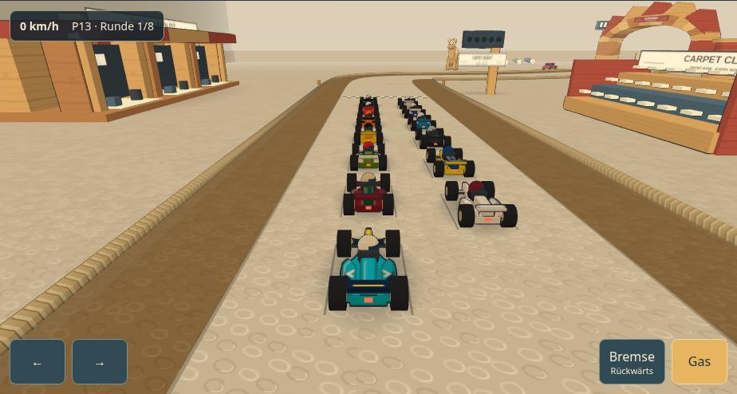
Vorher · freigegebene Fassung mit Teppich und Rundbogentor
 Jetzt · überdachte Haupttribüne, Boxen und Möbel im Hintergrund
Jetzt · überdachte Haupttribüne, Boxen und Möbel im Hintergrund
In der Rennkamera erkennbar
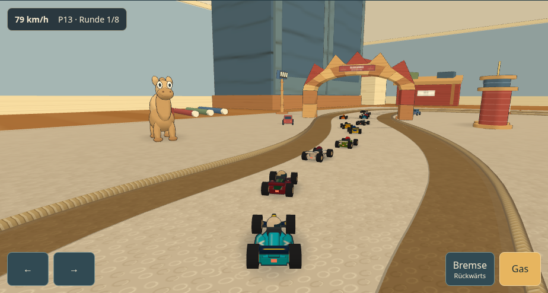
Erste Kurve · das freigegebene Rundbogentor bleibt erhalten
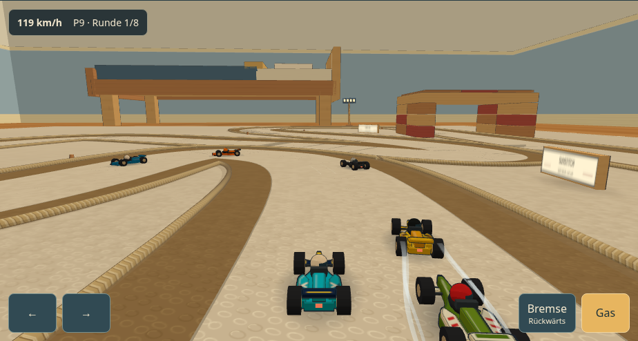
Seile, Bett und offener Unterraum
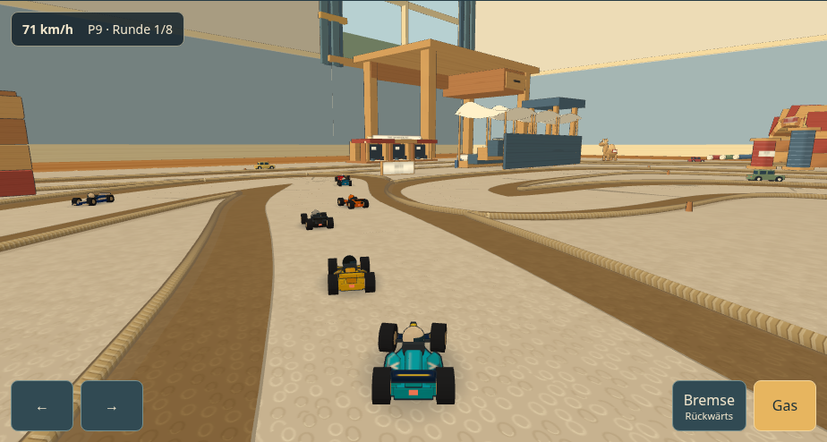
Fenster und Schreibtisch · kein leerer Nebelhorizont
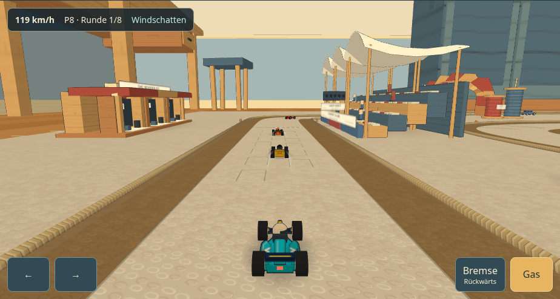
Haupttribüne · gestufte Bausteine, Spielzeugfiguren und geschwungenes Papierdach
Boxen und befahrbarer Bauklotztunnel
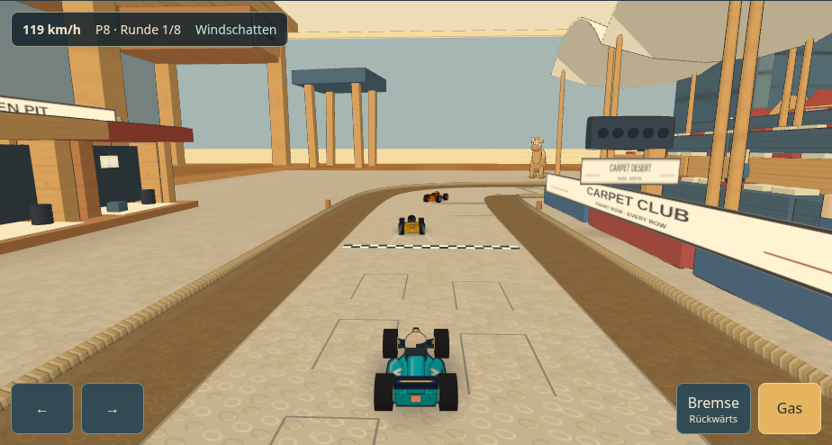
Drei Boxenöffnungen, kleine Reifenstapel und Werkzeugkisten
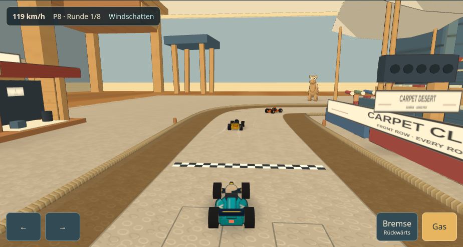
Start und Ziel · gleiche Positionen und Rundenzählung
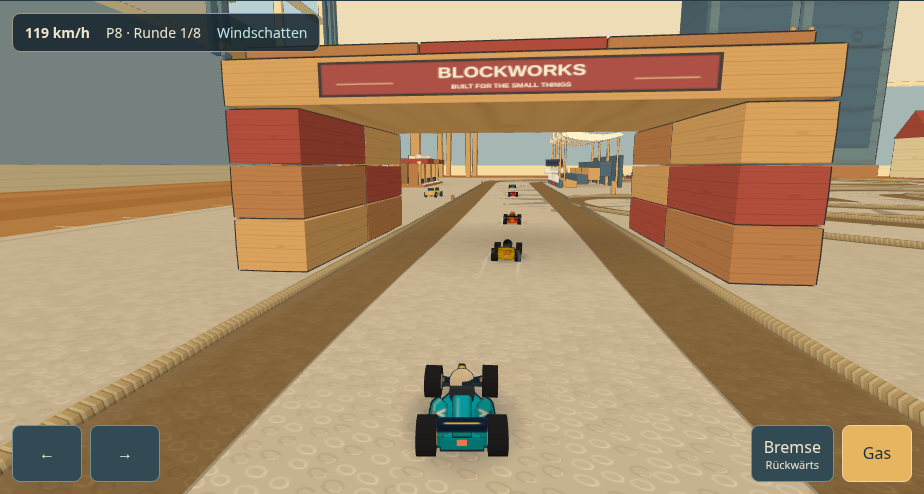
Tunneleinfahrt · zusätzlich zum Rundbogentor
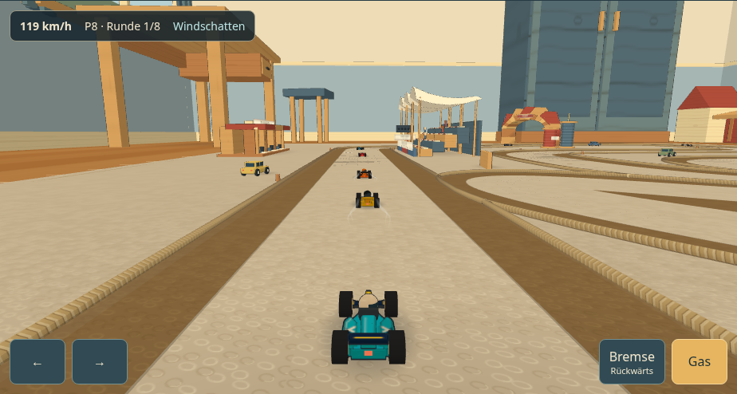
Durchfahrt · ausreichend Freiraum für Fahrzeug und Kamera
Mobilformat
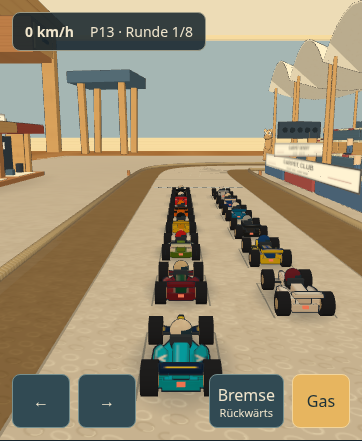
390 × 844 · reguläre Mehrfinger-Bedienung bleibt erhalten
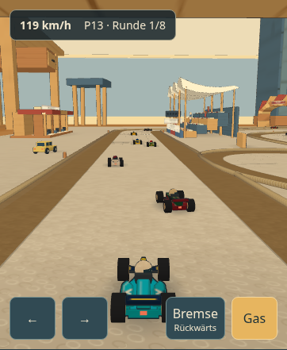
Gleiche Rennsysteme, dieselbe Zimmerwelt
Die ursprüngliche Ausgangslage
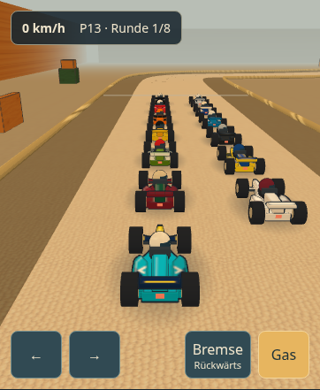
Frühere Szene entsprechend der mitgelieferten Referenz · echte historische Spielaufnahme
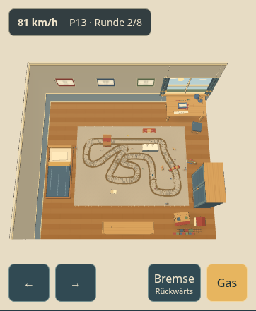
Jetzt · ein zusammenhängender Raum mit wiedererkennbaren Bereichen
Prüfungen und Messprotokoll sind im Pull Request dokumentiert. Die Mobilansichten stammen aus Chromium im Handyformat. Ein echter iPhone-/Safari-Performancetest ist noch offen. Die Fahrerporträts, Lackierungen, Fahrphysik, KI, Strecke und Spielstände wurden nicht verändert. Die übrigen 21 Strecken behalten ihre bisherige Umgebung.